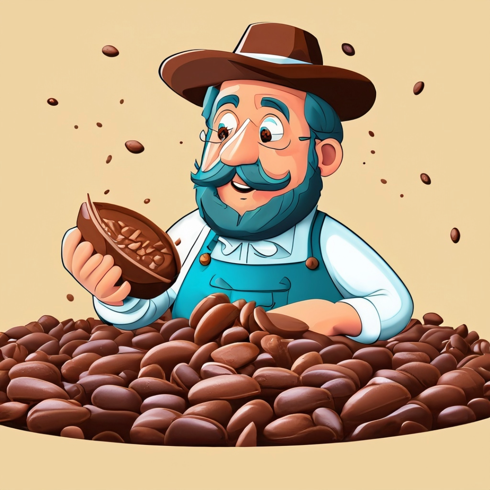
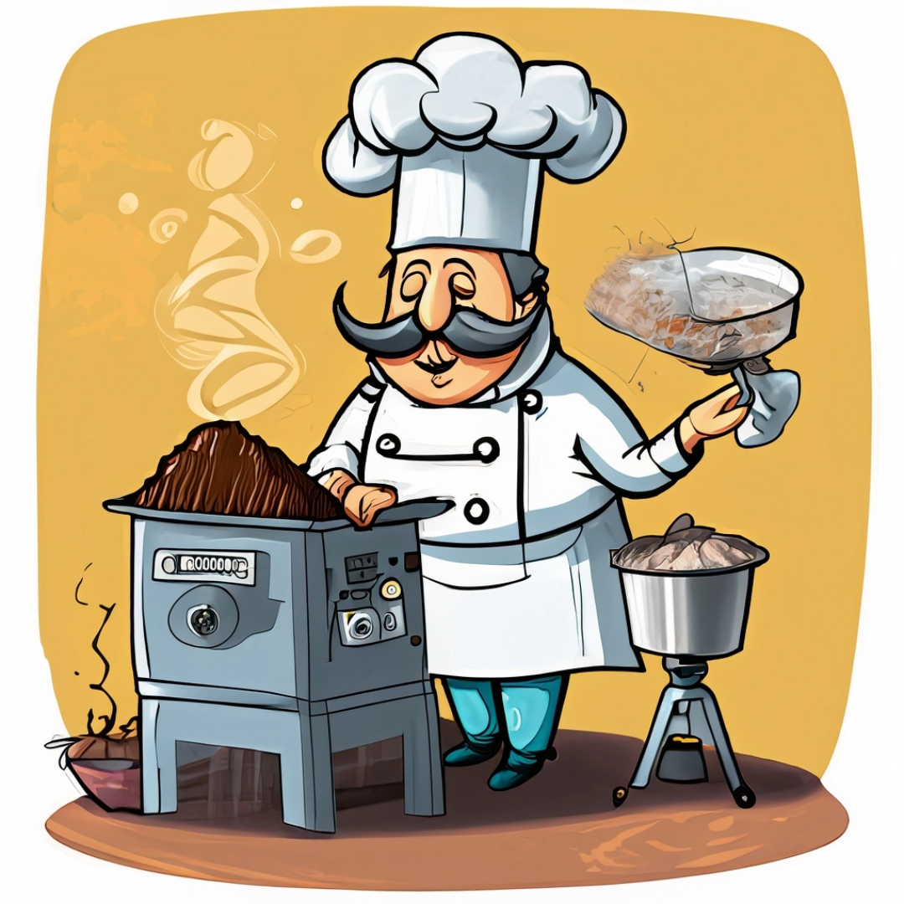
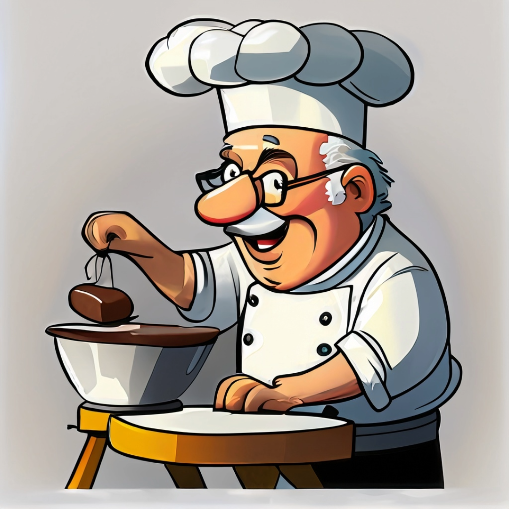

Nuestra Historia
Asi comienza...
Comienza con un viaje
Todos los años, viajamos a distintas plantaciones de cacao para seleccionar los granos para hacer el chocolate más rico
Selección de granos

Trabajamos con pequeños productores y seleccionamos los granos con diferentes perfiles de sabor para diseñar cada chocolate a medida.
El tostado de los granos
El tostado del grano es el momento más crítico y delicado del proceso del chocolate, ya que se desarrollan los precursores del sabor y se le da identidad al chocolate.
Templado y moldeado
